Kelantan Food Story
Fish Head Soup
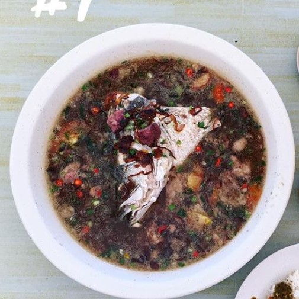
Fish Head Soup is a traditional Kelantanese dish that combines the succulent flesh of barramundi fish heads with hearty cattle bones, locally known as "Gearbox," in a spicy broth. This dish embodies the essence of Kelantanese cooking, which often involves bold flavors and a mix of aromatic spices. The dish has its roots in the Malay and Thai culinary traditions, common in Kelantan due to its geographical proximity to Thailand. Fish heads are prized in Malaysian cuisine for their rich, flavorful meat and the collagen found in the cheeks and eyes, which contribute to the soup’s luxurious texture. The use of cattle bones, or Gearbox, adds depth to the broth, making it rich and hearty.
Coconut Ice Cream
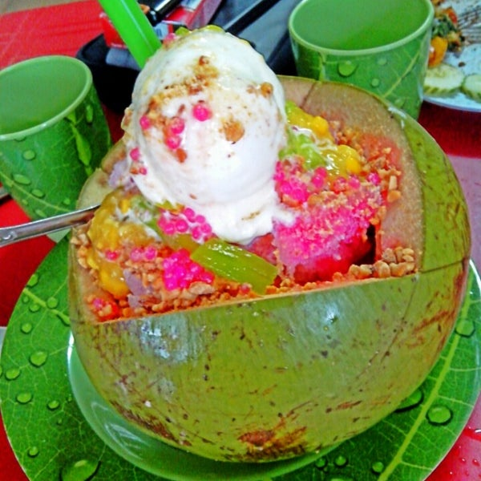
Kelantan, a state in Malaysia, is known for its rich culinary heritage and the creative use of local ingredients. Among the many traditional treats, Ice Cream Coconut stands out as a refreshing and delightful dessert, especially cherished during the hot, humid evenings. This dessert is a testament to the ingenuity of Kelantanese cuisine, blending tropical flavors and textures into a harmonious whole. The Ice Cream Coconut dessert has its roots in the tropical climate of Kelantan, where coconuts are abundant and often used in local cuisine. The idea of combining coconut with ice cream likely emerged as a way to cool down in the intense heat, turning a simple fruit into a luxurious treat. This dessert reflects the Kelantanese penchant for balancing sweetness with savory elements, resulting in a unique and satisfying experience.
Nasi Kerabu
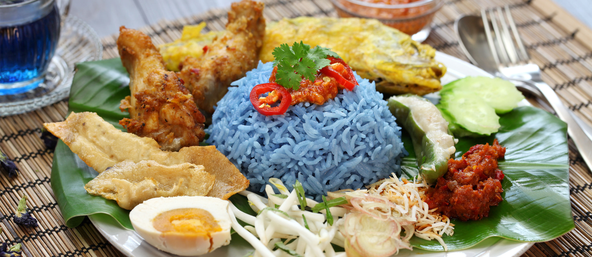
Nasi Kerabu is a distinctive and vibrant dish originating from Kelantan, Malaysia. Known for its striking blue rice and a medley of accompaniments, Nasi Kerabu reflects the rich cultural heritage and culinary ingenuity of the Kelantanese people. Nasi Kerabu's roots can be traced back to the Malay Peninsula, where it was traditionally prepared by the Malay communities. The dish is particularly associated with Kelantan, a state known for its unique blend of Malay, Thai, and Indian culinary influences. The name "Nasi Kerabu" translates to "Herb Rice," highlighting the dish’s key feature: rice infused with natural herbs and flowers. The most distinctive element of Nasi Kerabu is its blue rice, which gets its color from the petals of the butterfly pea flower (Clitoria ternatea). This natural dye not only imparts a beautiful hue but also adds subtle floral notes to the rice. The use of butterfly pea flowers is a practice inherited from the Thai influence in Kelantan, where the flower is also used in traditional recipes.
Nasi Tumpang
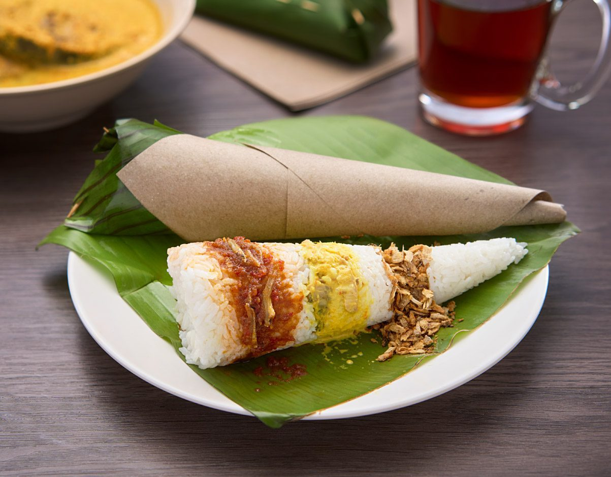
Nasi Tumpang is a traditional Kelantanese dish that exemplifies the region's rich culinary heritage and resourcefulness. This unique dish is deeply rooted in Kelantan's history and culture, originally created as a convenient and nourishing meal for travelers and workers. The name "Nasi Tumpang" translates to "packed rice" or "layered rice," and it is traditionally wrapped in banana leaves to create a cone-shaped package. This wrapping technique not only preserves the freshness of the ingredients but also makes the meal easy to carry and eat on the go. Nasi Tumpang was especially popular among laborers and farmers who needed a portable, filling meal that could sustain them throughout the day.
Gulai Serati
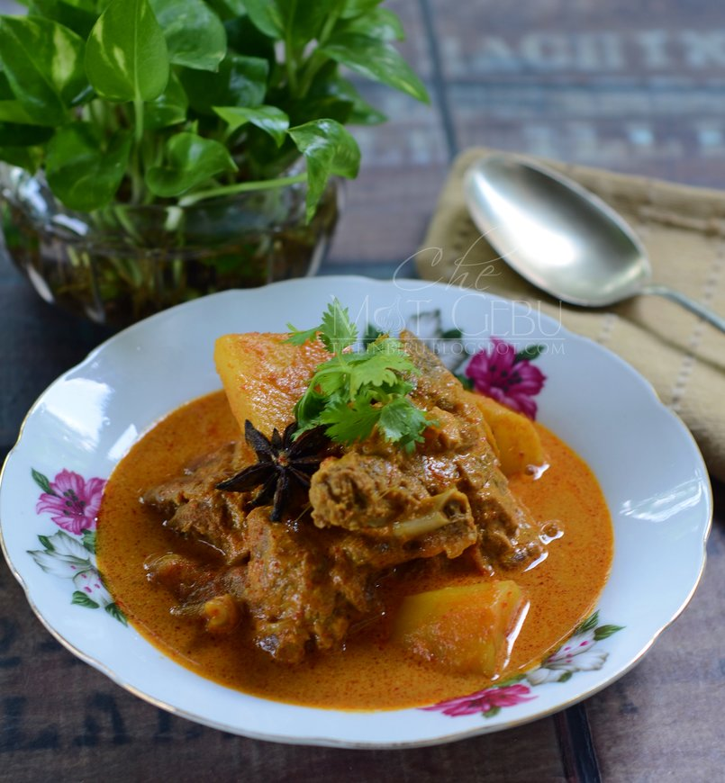
Gulai Serati is a traditional Kelantanese dish that embodies the rich and diverse culinary heritage of the region. Known for its creamy, flavorful curry, Gulai Serati is a testament to Kelantan’s penchant for bold and aromatic flavors. This dish has deep roots in Kelantanese cuisine and reflects the cultural and historical influences that have shaped the food of this Malaysian state. **Gulai** is a Malay term for curry, and **Serati** typically refers to the use of a variety of meats or vegetables in the dish. In the context of Kelantanese cuisine, Gulai Serati often features a combination of beef, chicken, or sometimes even fish, cooked in a richly spiced coconut milk-based sauce. The use of coconut milk, along with a blend of local spices, gives the curry its distinctive creamy texture and deep flavor. Kelantanese cuisine is known for its bold flavors and the liberal use of spices. The region's culinary traditions have been influenced by a mix of Malay, Thai, and Indian cuisines, which is evident in the complex flavor profiles of dishes like Gulai Serati. The dish is often served during special occasions and festive gatherings, making it a centerpiece in Kelantanese celebrations.
Pahang Food Story
Ikan Patin Gulai Tempoyak
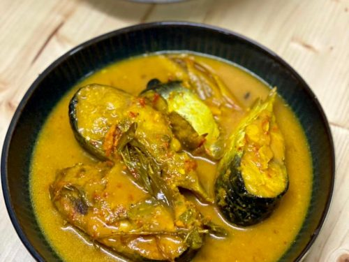
**Ikan Patin Gulai Tempoyak** is a distinctive dish from the Malaysian state of Pahang, known for its rich, aromatic flavors. This dish showcases the use of **tempoyak**, a fermented durian paste, which is a unique ingredient in Malaysian cuisine. The dish combines **ikan patin** (a type of freshwater fish, often the patin fish, known for its tender, white flesh) with a spicy, creamy curry sauce flavored with tempoyak.
Tempoyak is made by fermenting durian, a tropical fruit known for its strong odor and creamy texture. This fermentation process imparts a tangy, savory depth to the paste, which is a hallmark of Malaysian and Indonesian culinary traditions. The use of tempoyak in cooking reflects the influence of local indigenous food practices and the region's adaptation of ingredients for distinctive flavors.The dish is particularly popular in Pahang and neighboring regions, often enjoyed during festive occasions and family gatherings. Its combination of flavors highlights the fusion of traditional Malay, Thai, and Indonesian culinary influences, making it a unique representation of Malaysia's diverse food culture.
Mee Calong
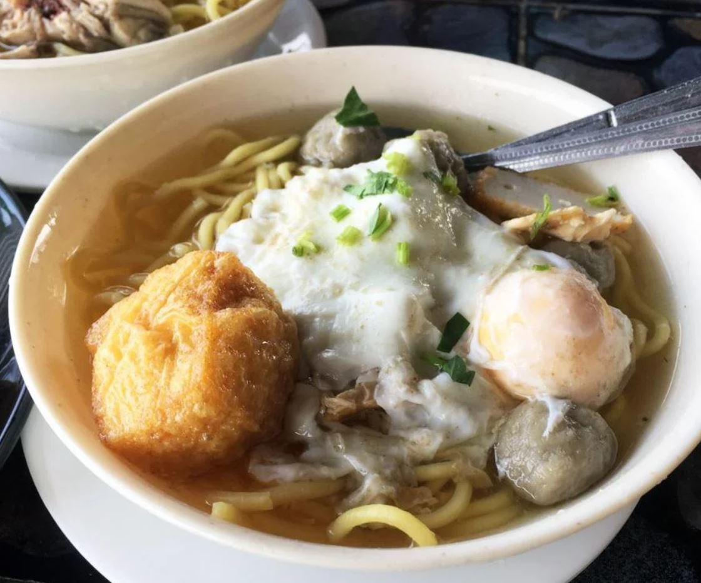
**Mee Calong** is a traditional noodle dish from the state of Pahang in Malaysia. This dish is cherished for its unique blend of flavors and textures, reflecting the culinary traditions and local ingredients of the region. Mee Calong is a classic example of how Malaysian cuisine incorporates diverse influences to create a distinctive local specialty.
The origins of Mee Calong are often linked to the multicultural influences of Pahang, where Malay, Chinese, and Thai culinary traditions converge. The dish is typically enjoyed as a hearty, comforting meal and is particularly popular in rural areas. It combines Chinese-style noodles with a rich, flavorful broth and a variety of ingredients that highlight the local palate.
**Mee Calong** is known for its flavorful soup base, which often includes ingredients like beef, chicken, or seafood, along with vegetables and spices. The noodles used in Mee Calong are typically soft and thin, soaking up the rich broth and making for a satisfying meal.
Mee Curry
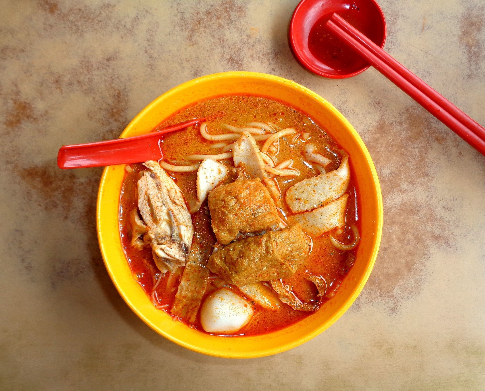
**Mee Curry** is a beloved noodle dish from the Malaysian state of Pahang, known for its rich, spicy, and aromatic curry sauce. This dish represents a fusion of local flavors with influences from Chinese, Malay, and Indian cuisines, reflecting Pahang's diverse culinary landscape.
Mee Curry typically features egg noodles or rice noodles in a creamy, spiced curry sauce made with coconut milk and a blend of aromatic spices. The dish is often garnished with a variety of fresh herbs and vegetables, making it a comforting and satisfying meal.
The origins of Mee Curry in Pahang are deeply rooted in the region's history of cultural exchange. Pahang, located on the east coast of Peninsular Malaysia, has historically been a melting pot of different ethnicities and cultures. This diversity is evident in its cuisine, which combines traditional Malay, Chinese, and Indian flavors. Mee Curry is a product of this fusion, showcasing the adaptability of local ingredients and cooking techniques to create a dish that is both familiar and unique.
Cendol Waffles
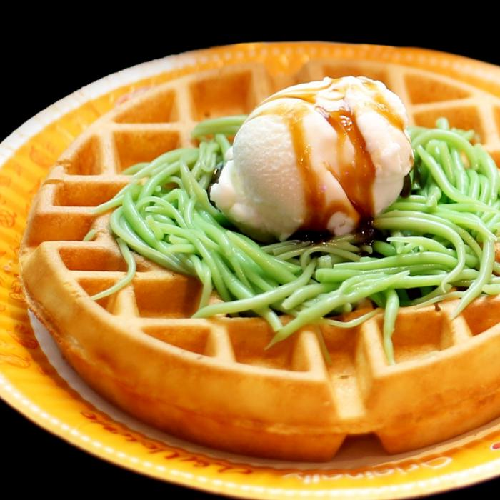
**Cendol Waffles** is an innovative and delightful fusion dessert that reflects the culinary creativity emerging from Pahang, Malaysia. This dish combines the traditional flavors of **cendol**, a popular Southeast Asian dessert, with the familiar texture of waffles, resulting in a unique and appealing treat.
**Cendol** is a traditional dessert made from green rice flour jelly, coconut milk, and palm sugar syrup, often served with shaved ice. It’s beloved across Malaysia and neighboring countries like Indonesia and Singapore. The dessert is celebrated for its refreshing qualities and distinctive flavors, which include the creamy richness of coconut milk and the sweet, caramel-like taste of palm sugar.
The concept of **Cendol Waffles** represents a modern twist on classic dessert traditions. By incorporating the elements of cendol into a waffle, this dessert merges the best of both worlds: the comfort of a warm, crispy waffle with the tropical, refreshing flavors of cendol. This fusion reflects Malaysia's vibrant food scene, where traditional dishes are often reimagined in creative and unexpected ways.
In Pahang, where culinary innovation and tradition coexist, Cendol Waffles has gained popularity as a trendy and inventive dessert option, particularly in urban areas and among younger generations looking for new taste experiences.
Puding Diraja (Royal Pudding)
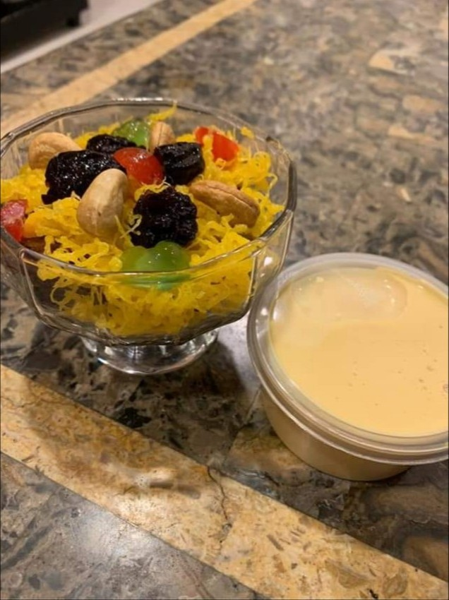
**Puding Diraja**, also known as Royal Pudding, is a traditional dessert from Malaysia, particularly associated with the state of Pahang. This exquisite pudding is steeped in historical and cultural significance, symbolizing the regal heritage and culinary excellence of the region.
The term "Diraja" means "royal" in Malay, indicating that this pudding was historically prepared for royalty or high-ranking officials. The dessert reflects the influence of various culinary traditions in Malaysia, including Malay, Chinese, and Indian, creating a luxurious treat that combines rich flavors and elegant presentation.
**Puding Diraja** is made with a blend of coconut milk, palm sugar, and sometimes pandan leaves, resulting in a smooth, creamy texture and a delightful balance of sweetness and aromatic undertones. Its preparation involves a meticulous process to achieve the desired texture and flavor, making it a special dish often served during celebrations, royal events, and significant occasions.
The pudding's association with royalty and its intricate preparation process underscore its importance in Malaysian culinary traditions. It represents the fusion of local ingredients and techniques, showcasing the high standards of Malaysian cuisine.
Terengganu Food Story
Nasi Dagang
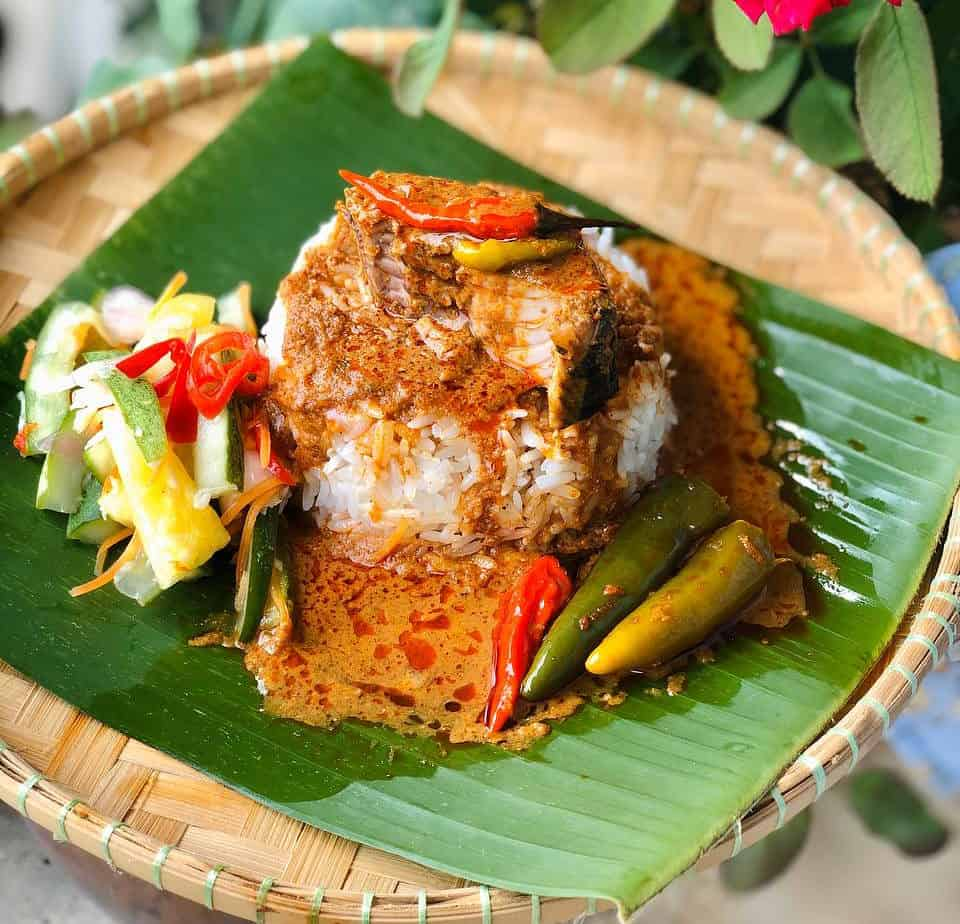
Nasi Dagang is a fragrant rice dish that is a staple of Terengganu's cuisine. Nasi Dagang translates to "trader's rice," reflecting its origin as a convenient and filling meal for travelers. Steamed glutinous rice cooked with coconut milk is the base, typically served with a rich and spicy fish curry and various side dishes. The dish highlights the influence of Malay, Thai, and Indian culinary traditions.
Keropok Lekor
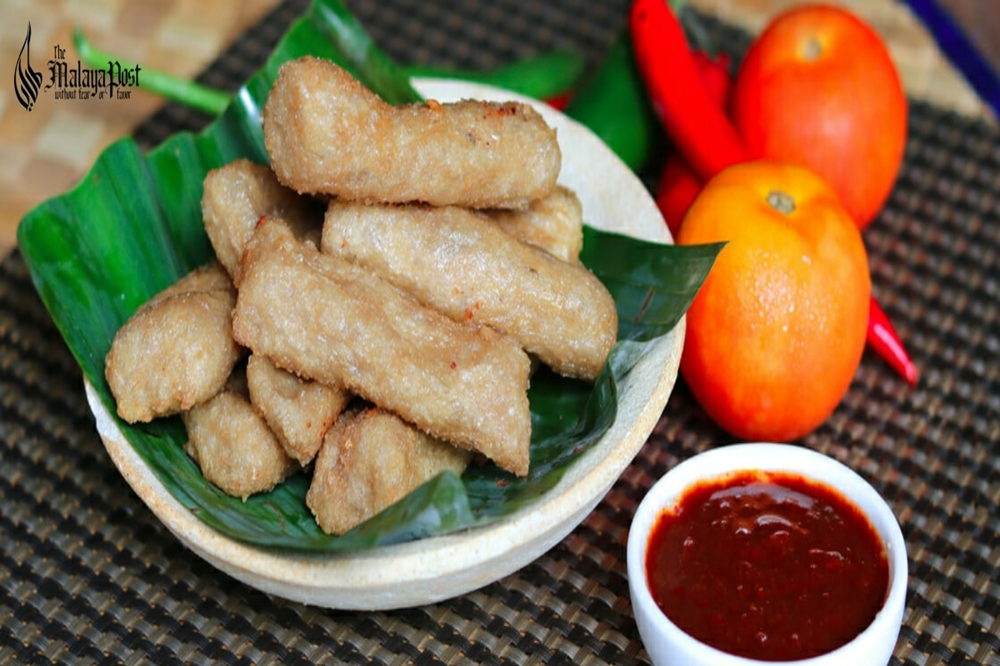
Keropok Lekor is a popular Terengganu snack that is a type of fish cracker. Made with fish paste, flour, and spices, keropok lekor is known for its unique flavor and crispy texture. The name refers to the process of shaping the fish paste into long cylinders before deep-frying them. Keropok lekor is enjoyed as a snack or appetizer and is a staple of Terengganu's street food scene.
Sata
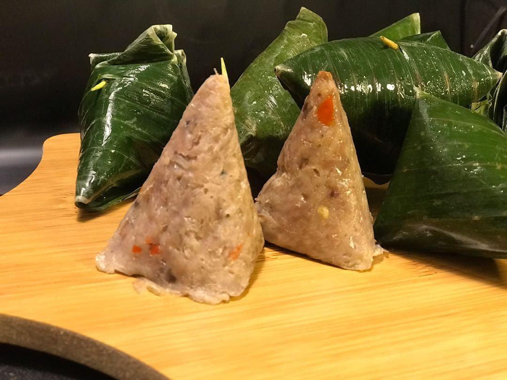
Sata is a savory snack or appetizer made from minced fish mixed with spices and coconut, wrapped in banana leaves, and then grilled or steamed. This dish originates from Terengganu's coastal communities, where fish is abundant. The banana leaves impart a subtle smoky flavor and enhance the aroma during cooking. Sata is popular during festivals, special occasions, and as a street food.
Nekbat
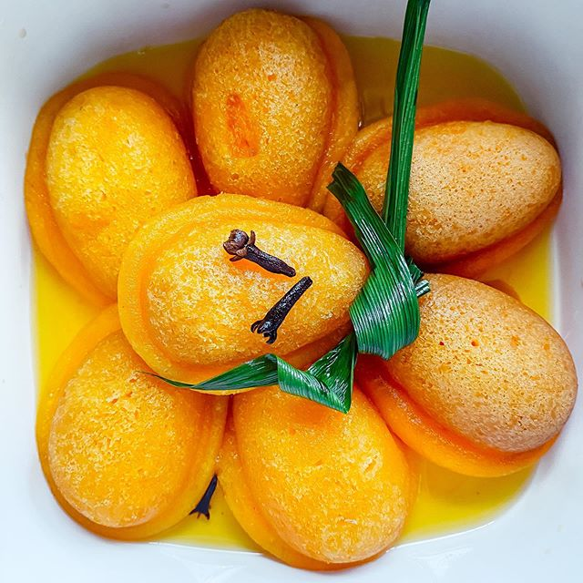
Nekbat is a unique Terengganu dessert that boasts a dense and chewy texture with a sweet flavor. Made with glutinous rice flour, coconut milk, and sugar, nekbat is often steamed and served with a sweet coconut sauce or syrup. Its preparation involves a meticulous layering process and is considered a classic example of Terengganu's sweet treats. Nekbat is particularly popular during festivals and special occasions.
Laksa Terengganu
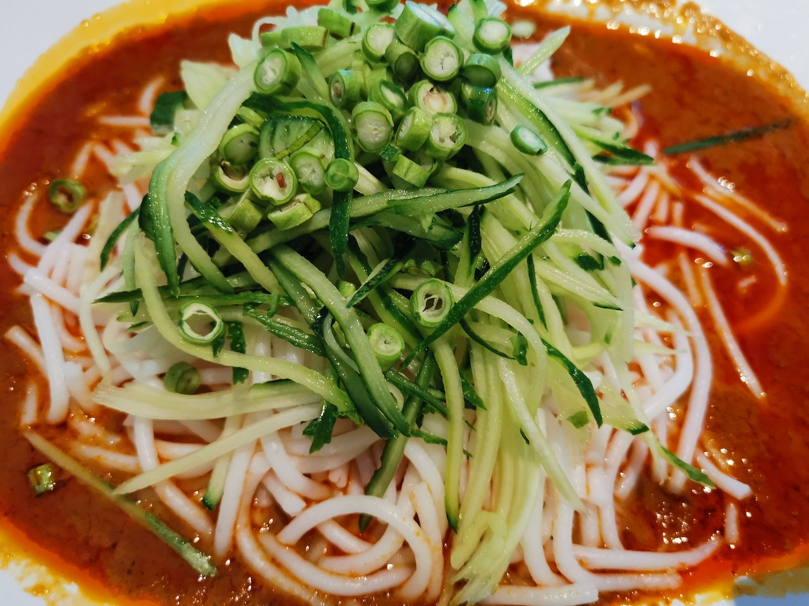
Laksa Terengganu is a regional variation of the popular laksa dish that features a unique blend of flavors and ingredients. Laksa Terengganu is distinguished by its use of a rich, fish-based gravy and its slightly different noodle preparation compared to other laksa variants. The roots of Laksa Terengganu can be traced back to the region's historical trade and cultural exchanges. This hearty meal is traditionally enjoyed during festive occasions, family gatherings, and as a popular street food.
Perak Food Story
Chee Cheong Fun (Teluk Intan)
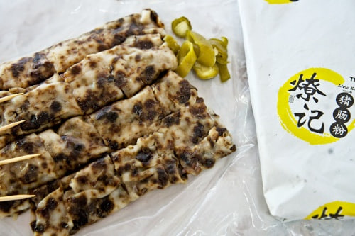
Chee cheong fun is a popular Malaysian dish that has been enjoyed by locals and visitors alike for decades. This steamed rice noodle roll is a staple in Malaysian cuisine. Teluk Intan Chee Cheong Fun differs from the Hong Kong Style Chee Chong Fun and even the Kampar Chee Cheong Fun. They are filled with preserved vegetables, turnip, and dried shrimps, letting the smooth original Chee Chong Fun to be in a different style, combining the soft and the crunchy taste. Chee Cheong Fun sauce is mostly the sweet sauce or chili sauce, but, at here is they only have homemade preserved green chilies to be eaten with.
Claypot Chicken Rice (Kampar)
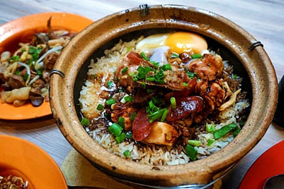
One of the best-known eateries in Kampar is Heng Kee, which specializes in chicken rice, cooked in Chinese claypots atop charcoal braziers. Founded sometime around the 1950s by a Cantonese sojourner, Lai Heng, the eatery started off as a road-side stall on wheels. He later settled in a permanent location at Chan Siew Heng Kopitiam, a traditional Chinese coffeeshop in Kampar Old Town in 1960s, before moving to Wing Loke Yuen Coffee Shop on Jalan Idris (the town’s busy restaurant-lined precinct), towards the end of the 60s decade. Now, it’s got its own shophouse on Jalan Idris.
Heng Kee’s chicken rice is cooked with salted fish, slivers of Chinese sausages, and small pieces of chopped chicken which had been marinated with minced ginger, oyster sauce and light soy sauce. Dark soy sauce is drizzled onto the rice, which is then topped with an egg & chopped scallions before serving.
The current owner-chef is 59-year-old Lai Lit Keong @ Ah Keong, who had been helping his father, Lai Heng, since he was a kid. Ah Keong now runs the eatery with clockwork efficiency, as he cooked upwards of 14 claypots at one go, effortlessly monitoring the multiple individual pots of chicken rice he had started cooking upon receiving the orders at various times.
Dim Sum
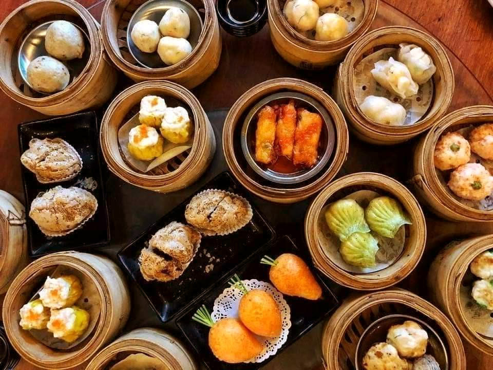
Dim Sum is a term used to describe a collection of snack-sized dishes usually served on small plates and accompanied with tea. Dim sum translates as “A little touch of heart” which is said to describe the food’s pleasant flavours and comforting texture. When referring to Dim Sum, the phrase “yum cha” which means “let’s drink tea” is also used to reference how Dim Sum was traditionally accompanied with tea when it was invented in 19th century Guangzhou tearooms. Consuming Dim Sum is a very social occasion with many people ordering and sharing multiple dishes together at one table. This is why Dim Sum is such an exciting dish to enjoy!
Dim sum developed in the 19th-century tea houses of China’s Guangdong province. This southern coastal province was frequented by silk road traders who would often stop for refreshments and rest on their travels. Tea was said to promote good digestion so tea houses started to serve small bite-size snacks to give the traders strength for their trips. Ever since tea and Dim Sum have been served together giving way to the phrase “yum cha” or “to drink tea”.
The history of Dim Sum in Malaysia is deeply rooted in a time when the country’s own food culture was being established. From the 17th century onwards, the migration of southern Chinese citizens from Fujian, Canton and Guangdong brought new techniques and approaches which eventually combined with traditional Malay cooking forming what we know as Nyonya. Dim sum was among many of the Canton (now Guangzhou) traditions that were adopted by the local populace.
One of the classic dishes is Siumai. It is a steamed dumpling Dim Sum consisting of a prawn and minced pork filling that poke out of a chewy pastry wrapper. The top is then garnished with finely chopped carrots giving Shumai their signature appearance. Shumai is often encased within an egg-based wonton wrapper which is thicker and chewier than rice flour dough. At PA Food we’ve created a line of fresh mouth-watering Shumai products including seafood, mushroom chicken, black pepper chicken and original chicken.
Putu Perak
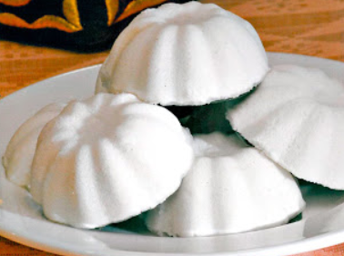
Putu Perak’s origins trace back to the early 20th century, born from the ingenuity of communities residing along Perak’s riverbanks. Rice, a staple crop, was transformed into a delightful treat using simple bamboo steamers and locally sourced ingredients. The name itself is a delightful play on words – “Putu” meaning “cake” or “steamed”, and “Perak” denoting its state of origin. This unassuming steamed cake soon captivated hearts and stomachs, becoming a ubiquitous feature of night markets and family gatherings.
The simplicity of Putu Perak lies in its ingredients. A blend of rice flour, grated coconut, and palm sugar is steamed to perfection, producing a soft, pillowy texture with a subtle sweetness. The filling, traditionally grated brown sugar and shredded coconut, adds a burst of contrasting textures and flavors. Each bite unfolds a symphony of textures – the yielding softness of the rice cake, the satisfying chew of the coconut, and the delightful crunch of the sugar, all harmonizing into a truly memorable experience.
Putu Perak transcends mere culinary delight; it’s a window into the cultural tapestry of Perak. Its preparation, traditionally a communal affair, fostered social bonds and passed down generations-old techniques. The hiss of the steamer, the delicate folding of the rice batter, the skillful filling of the bamboo tubes – each step whispered tales of tradition and heritage. Putu Perak became a symbol of warmth, hospitality, and shared joy, gracing festive occasions and marking significant milestones in life.
Today, Putu Perak’s legacy continues to evolve. While street vendors remain the custodians of the traditional experience, modern adaptations are emerging as a way to introduce this treat to the younger generations.
Tau Fu Fah
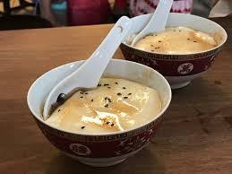
Tau Fu Fa , as we can said that Dou Hua in other word. Initially, the origin of Tau Fu Fa is came from China and it has a many years of history and eaten in different ways in a different religion in China. Actually, Tau Fu Fa is consists of the Soft Tofu and soy bean and it can be treated as a snacks or dessert and it sometimes can be called as soy bean pudding. The recipe of the Tau Fu Fa is vary relatively from district to district with each state of China along with other nations such as Far East and America revising their own recipe over the others.
Moreover, it is necessary to use spoon in order to eat the Tou Fu Fa and difficulty to use with chopsticks due to the smooth and moisture. Actually, the main ingredients of the Tau Fu Fa is Gypsum, which is coagulable to make tofu with a combination of ginger and rock sugar. On the other hand, it also be influence by the season in some temperate countries. For example, it is served with the ice cube during in the summer, then it is served with warm and hot during in the winter. Also, it can be served in two ways which are warm and cold dessert like take it from the refrigerator.
Long time ago, wooden bucket is used to made the Tau Fu Fa when it is sold as a part of the Dim Sum cuisine in the traditional way. Based on the Malaysia and Singapore in a different area, it can be served with sweet syrup together with the ginkgo seeds or sometimes with pandan. Meanwhile, according to the Taiwan cuisine, it also can be served with special toppings such as cooked peanuts or oatmeal,mung beans, tapioca and a syrup together with the ginger or almond in two different flavor. In addition, in Vietnam cuisine, it is different served among the three region of Vietnam. For example, in Northern, it serves with chia seeds and sugar. In Central, it serves with spicy ginger and already included sugar. While in Southern, it serves with lychee and coconut water in warm. In the end, in Indonesian cuisine , it often serve with ginger flavored palm sugar syrup.
Negeri Sembilan Food Story
Sambal Ikan Sembilang
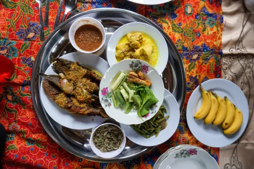
Sambal Ikan Sembilang is a traditional Malaysian dish that combines the rich flavors of sambal with the unique taste of ikan sembilang, a type of catfish known for its firm texture and mild flavor. This dish is a staple in Malaysian cuisine, particularly in rural areas where fresh fish is readily available.
Sambal is a versatile chili paste or sauce that originated from Indonesia but has become integral to the culinary traditions of several Southeast Asian countries, including Malaysia. It typically consists of ground chili peppers mixed with various ingredients such as garlic, shallot, lemongrass, and lime juice, creating a spicy and aromatic condiment that enhances the flavor of many dishes.
Ikan Sembilang, also known as catfish, is commonly found in Malaysian waters and is a popular choice for various traditional dishes. The fish is often used in curries, soups, and sambals due to its firm texture and ability to absorb flavors well.
Fresh Milk Cheesy Crab
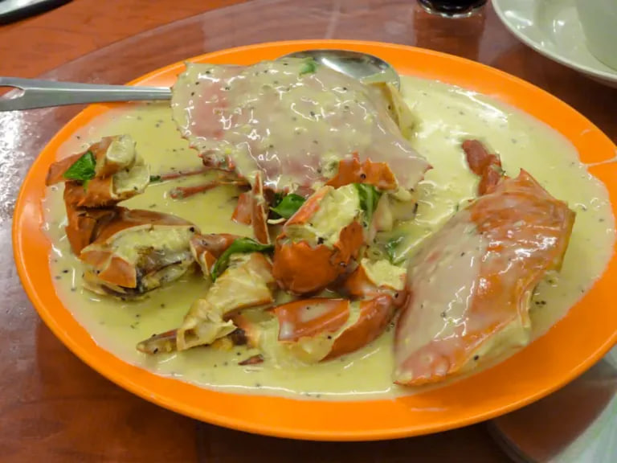
Fresh milk cheesy crab is a popular dish, particularly in Malaysian cuisine, known for its rich and creamy flavor profile. This dish typically features fresh crab meat combined with a cheese sauce made from fresh milk, resulting in a decadent and savory meal.
The dish is often associated with coastal regions where fresh seafood is abundant. In Malaysia, it is commonly found in seafood restaurants, where chefs creatively incorporate local ingredients to enhance traditional recipes. The combination of crab and cheese reflects a fusion of flavors that appeals to both locals and tourists.
Fried Eels
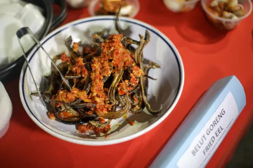
Fried eels have a rich history and cultural significance in various cuisines, particularly in regions where eels are abundant. The dish is often celebrated for its unique flavors and textures, and it reflects the ingenuity of different culinary traditions.
Fried eels have been a part of traditional diets in many cultures, particularly in coastal areas where eels are readily available. In North America, for instance, African Nova Scotians have a long-standing tradition of cooking fried eels. Wendie L. Wilson, an African Nova Scotian, recalls how her family would fry eels in a cast iron pan, serving them with simple sides like cucumber and boiled potatoes. This practice stems from a time when eels were plentiful and provided a nutritious meal for families. Wilson emphasizes the importance of recognizing and celebrating African Nova Scotian cuisine, which has often been overlooked despite its rich heritage.
Eels are not only appreciated for their taste but also for their nutritional benefits. They are rich in protein and are believed to have medicinal properties in traditional Chinese medicine, where they are thought to tonify Qi, nourish the blood, and reinforce strength. This belief is rooted in legends that associate eels with longevity and health benefits
Gravy Kuey Teow
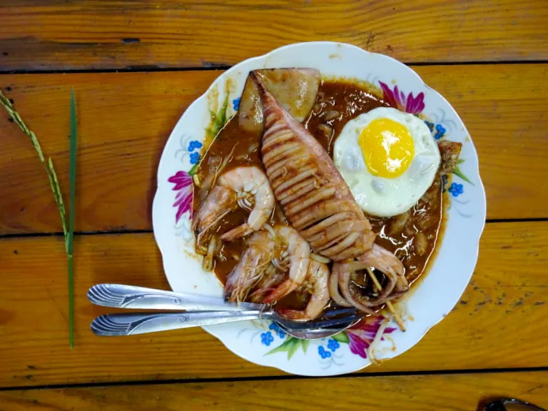
Char Kuey Teow Sotong is a delicious variation of the classic Malaysian dish Char Kuey Teow, which features stir-fried flat rice noodles. This particular version incorporates squid (sotong), enhancing the dish with a seafood twist that is popular among seafood lovers.
Char Kuey Teow has its roots in southern Chinese cuisine, specifically from the Hokkien and Teochew communities. The term "char" means "stir-fried," while "kuey teow" refers to the flat rice noodles used in the dish. It was originally developed by overseas Chinese laborers in Southeast Asia, particularly in Malaysia and Singapore, and has since become a beloved street food staple.
Char Kuey Teow Sotong is not just a meal; it embodies the cultural melting pot of Malaysia, where Chinese culinary techniques meet local ingredients and flavors. It is often served in hawker centers and food stalls, making it an accessible and popular choice for both locals and tourists.
Char Kuey Teow Sotong represents the adaptability and creativity of Malaysian cuisine. By incorporating squid into the traditional recipe, it offers a delightful variation that showcases the region's rich seafood offerings. This dish continues to be a favorite among many, celebrated for its bold flavors and satisfying textures.
Gulai Daging
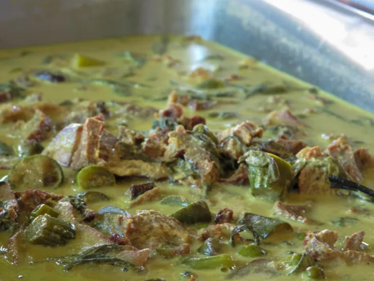
Gulai daging is a beloved dish in Malaysian and Indonesian cuisine, with a rich history and cultural significance. Here's the story of this flavorful meat stew:Gulai originated on the island of Sumatra, Indonesia, and is believed to be a local adaptation of Indian curry, developed through Indian influence on Southeast Asian cuisine. The dish has since spread throughout the Malay Archipelago, becoming popular in Malaysia, Indonesia, Singapore, and Brunei.Gulai daging, specifically referring to meat gulai (usually beef or lamb), is characterized by its thick, yellowish sauce made with a blend of aromatic spices and coconut milk.
Gulai daging holds a special place in Malaysian and Indonesian cuisine, often served during festive occasions, family gatherings, and special events. It's typically enjoyed with steamed rice, although some variations, like gulai kambing (goat gulai), may be served with roti canai.Interestingly, gulai is considered a precursor to the famous rendang dish. In the traditional cooking process of rendang, the meat first goes through a gulai stage before further reduction creates the dry, intensely flavored rendang.
The popularity of gulai daging extends beyond home cooking. It's a common sight in Padang restaurants in Indonesia, where the golden, spicy sauce is often displayed in window presentations to entice customers. In Malaysia, variations like gulai tempoyak (gulai with fermented durian) are local specialties in states like Perak and Pahang, served both in daily meals and during celebrations like Hari Raya.
Selangor Food Story
Banana Leaf Rice
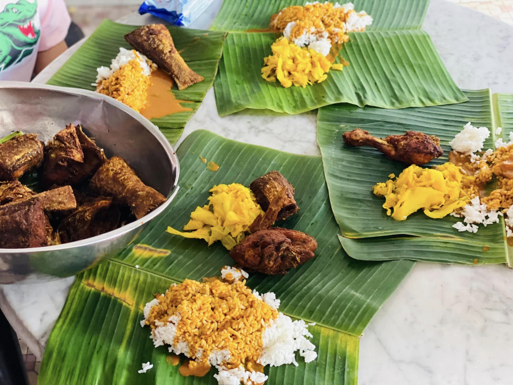
Banana leaf rice holds deep historical roots in Malaysia, specifically within the South Indian community. The origins of this popular rice dish can be traced back to the historical connections between Malaysians and South Indians, who migrated to Malaysia during the British colonial period.
South Indians brought with them their traditional method of serving food on banana leaves, which not only added a unique flavor to the meal but also had a cultural significance. The banana leaf is a symbol of purity. Moreover, it can enhance the taste and aroma of the food served on it.
Over the years, banana leaf meal has evolved and become an integral part of Malaysian culinary heritage. It has adapted to the local Malaysian palate, incorporating flavors and ingredients from various cuisines, such as Malay, Chinese, and Indian, resulting in a diverse and delicious variety of dishes.
Today, banana leaf rice is not limited to the South Indian community but is enjoyed by Malaysians of all backgrounds. It is commonly served during special occasions, festive celebrations, and even as a part of everyday meals. The cooking process, where rice is served on a large banana leaf accompanied by various curries, vegetables, and condiments, creates a communal dining experience that brings people together.
Therefore, banana leaf rice has cemented its place in Malaysian culture through its historical origins, evolution, and cultural significance. It represents the diversity and integration of different food cultures in Malaysia, making it an essential part of the country’s culinary heritage.
Lontong
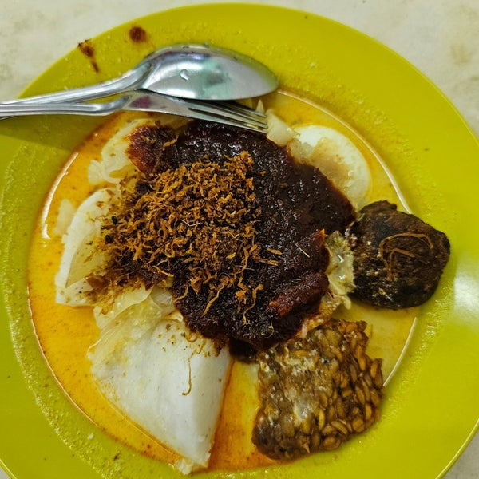
Lontong is a popular Malaysian dish that is traditionally served during festivals and special occasions. This flavorful dish consists of rice cakes that are compressed in banana leaves and then boiled in water. The rice cakes are then sliced into bite-sized pieces and served with a rich and spicy coconut milk gravy. Lontong is a must-try for anyone visiting Malaysia and is a beloved staple of the Malaysian cuisine.
The origins of lontong are believed to date back to the 7th century in Indonesia. It was originally known as ‘ketupat’ and was a popular dish among the Javanese people. When the dish made its way to Malaysia, it underwent some changes and became known as ‘lontong’. The name ‘lontong’ is said to be derived from the sound made when the banana leaf is being compressed during the cooking process.
Tandoori Chicken
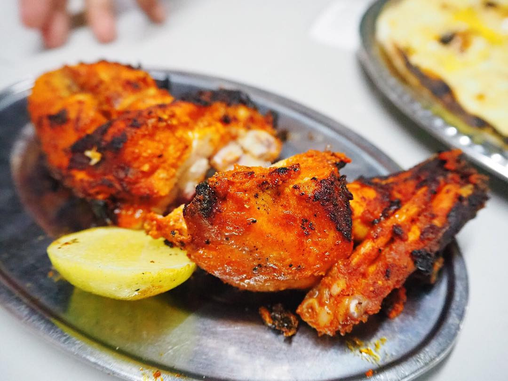
Chicken roasted in tandoor-like ovens is documented in the Harappan civilization of the Bronze Age of Indian subcontinent, as early as 3000 BC. Much later, the Sushruta Samhita records meat being cooked in an oven (kandu) after being seasoned with black mustard (rai) powder and fragrant spices.
Tandoori chicken as a dish originated in the Punjab before the independence of partition of India. In the late 1940s, tandoori chicken was popularised at Moti Mahal in the locality of Daryaganj in New Delhi by Kundan Lal Jaggi, Kundan Lal Gujral and Thakur Das Magu, who were Punjabi Hindu migrants from Peshawar as well as the founders of the Moti Mahal restaurant. They used to work at a small eatery called Moti Mahal, owned by a man named Mokha Singh Lamba in Peshawar, British India, from the 1920s to 1947.
Tandoori chicken was popularized in post-independence India by Moti Mahal, Daryaganj in Delhiwhen it was served to the first Prime Minister of India, Jawaharlal Nehru. There, tandoori chicken became a standard offering at official banquets.
Traditional Kuih
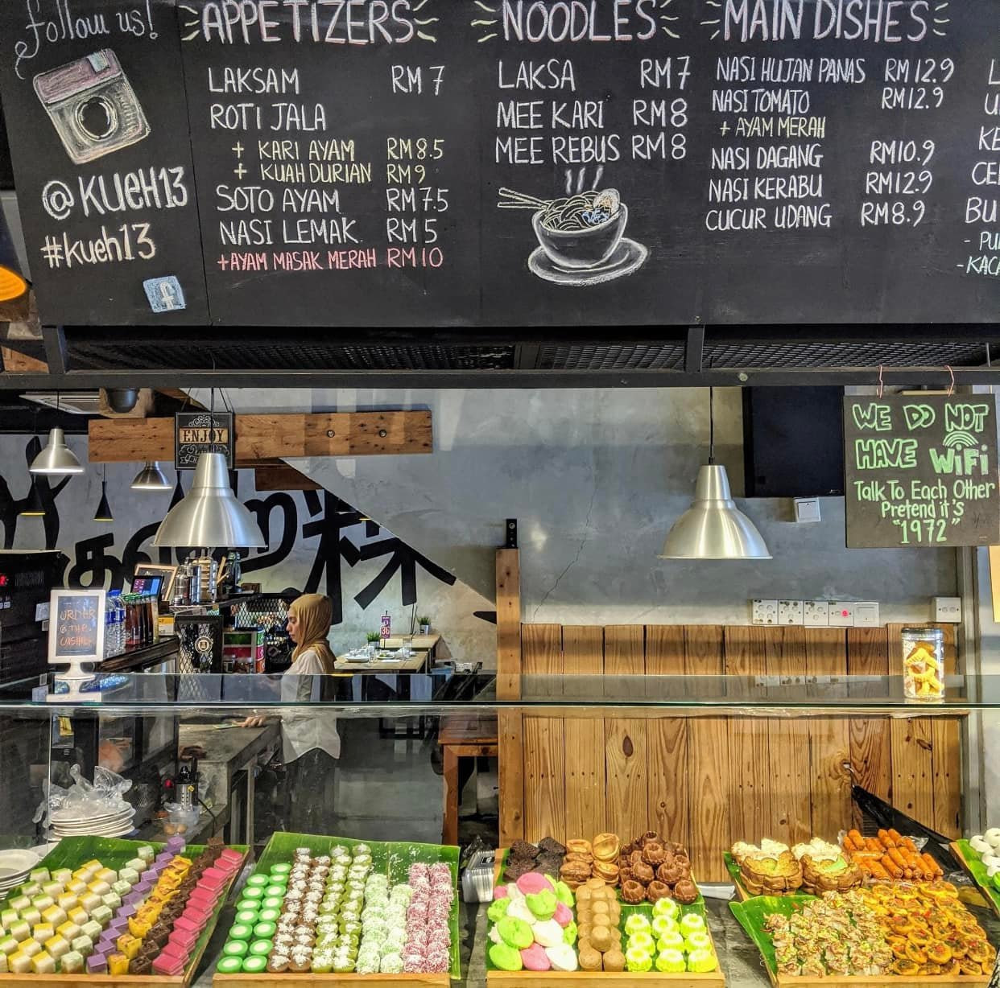
In Malaysia, Kuih is actually a core specialty, with the first recipes created by the Peranakan or Nyonya people – pre-colonial Chinese settlers who arrived during the reign of old Malay Sultanates and had completely integrated their customs with local traditions, including language, faith and cuisines. Other cultures and Western colonials eventually brought even more tasty influences to the region, thus Kuih evolved and adapted into unique culinary art.
Today, it is a colloquial term that includes pastries, cookies, dumplings, and cakes of many kinds. But traditional Nyonya Kuih is still a mainstay enjoyed by all Malaysians. Great for dessert, breakfast and tea-time snacks. Available in morning and night markets, as well as street vendors and warung diners.
The word Kuih is of Chinese origin, but the tastes are distinctively Malay and Indonesian. Smooth, creamy coconut milk blended with rice flour, mung bean starch or tapioca flour. Flavoured with sugar and mild touches of salt, as well as Pandan for fragrance akin to vanilla. Steamed into tender, bouncy jelly-like desserts. Glutinous rice, yam, sweet potato, shredded coconut, sago, palm sugar and blue butterfly pea are also specialty ingredients.
Yong Tau Fu
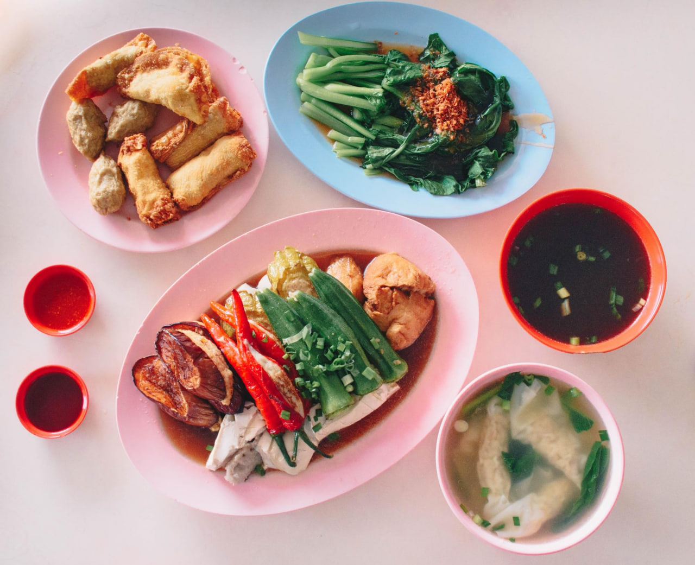
Yong tau fu also spelled yong tao foo, yong tau fu, yong tau hu or yong tofu is a Hakka Chinese dish consisting primarily of tofu filled with ground meat mixture or fish paste. Variations on this dish feature - instead of tofu - vegetables and mushrooms stuffed with ground meat or fish paste. Yong tau foo is eaten in numerous ways, either dry with a sauce or served as a soup dish.
It is commonly found in parts of China, Indonesia, Malaysia, Singapore, Thailand, Vietnam, and in cities where there are large Hakka populations.
Long ago, the Hakkas started migrating Southwards in order to flee the war in Northern China and through a series of migrations, finally settled Southern China. Because they couldn't get hold of wheat flour to make dumpling skins during the festivals, they started using tofu instead. The word “Nyong” in Hakka describes the action of filling the tofu with the stuffing and hence “Yong Tau Foo” was born
Fried
Traditional Hakka versions of yong tau foo consists of tofu cubes stuffed and heaped with minced meat (usually lamb or pork) and herbs, then fried until golden brown, or sometimes braised. Variations include usage of various condiments, including eggplants, shiitake mushrooms, and bitter melon stuffed with the same meat paste. Traditionally, yong tau foo is served in a clear yellow bean stew along with the bitter melon and shiitake variants.
Soup
Particularly in the Southeast Asian Hakka diaspora, the term "yong tau foo" is used to describe a soup dish that substitutes minced meat with fish paste. The base of the dish is various forms of tofu stuffed with fish paste, but it is now common to stuff vegetables like bitter melon, okra, chilis with fish paste as well, and the soup can include other ingredients like fish balls, crab sticks, cuttlefish, sausages, etc. The foods are then sliced into bite-size pieces, cooked briefly in boiling broth and then served either in the broth as soup or with the broth in a separate bowl ("dry"). The dish is eaten with chopsticks and a soup spoon and can be eaten by itself or served with a bowl of steamed rice, noodles or rice vermicelli. Another variation of this dish would be to serve it with laksa gravy or curry sauce. Essential accompaniments are a spicy, vinegary chili sauce, originally made with red fermented bean curd and distantly similar in taste to Sriracha sauce, and a distinctive brown sweet bean sauce or hoisin sauce for dipping.
Pulau Pinang Food Story
Kway Chap

Kway chap is a braised duck noodle with duck meat, skin, intestine, coagulated blood and braised duck egg in a herbal broth unique to Penangites. This is the most common comfort food you can find in Penang but not widely available in all restaurants. Your best find would be at Lebuh Kimberley.
Oyster Omelette
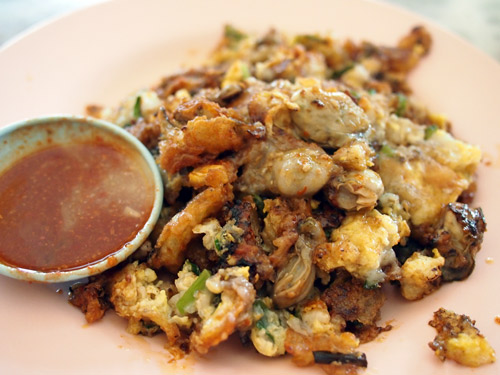
Orh Chien, known in Hokkien, and Orh Luak in Teochew, is a delectable dish that has its roots in southern China. Despite being a slightly premium hawker dish today, its origins trace back to times of famine. The dish was innovatively crafted to feed the masses during these challenging times, using available ingredients like oysters, sweet potato starch, and eggs. The oysters, abundant off the coasts of Fujian and Guangdong, combined with the sweet potato starch (a carb substitute) and eggs, resulted in a dish that was both affordable and nutritious.
When laborers from Fujian and Chaoshan migrated to British Malaya between the 1830s and 1930s, they brought along their culinary treasures, including Orh Chien. The dish has since become an integral part of Singapore’s and Malaysia’s hawker culture, with various regional interpretations.
Penang Asam Laksa

Asam laksa is actually common in the northern Peninsular Malaysia and northern Sumatra. Depending on its place of origin, a bowl of asam laksa usually consists of smooth rice noodles, shredded mackerel, sliced vegetables such as cucumber, onions, chillies, lettuce, common mint, laksa mint and pink torch ginger, pineapple slices and a sweet prawn paste called heh ko.
Penang Char Kuey Teow
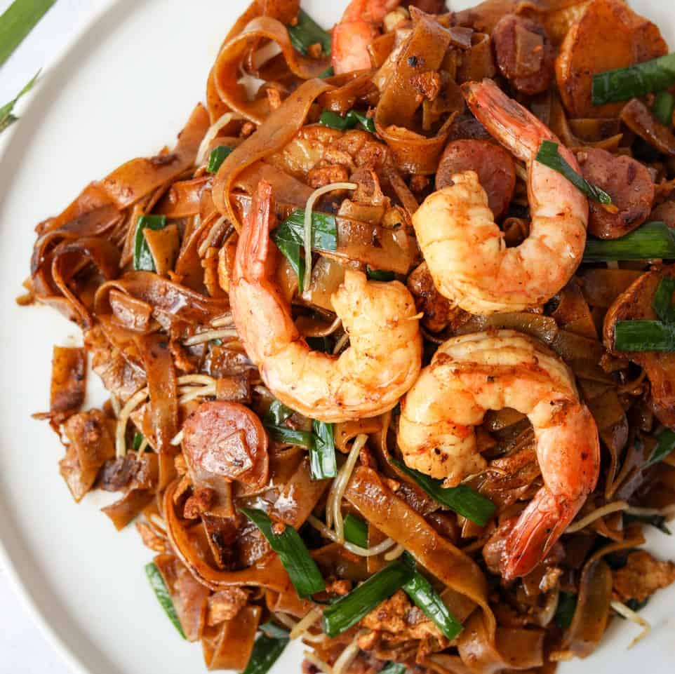
Char kuey teow ('fried rice cake strips' in Penang Hokkien) is a Chinese fried noodle dish popular in Singapore and Malaysia. Its main ingredient is flat rice noodles known as kuey teow, which is stir-fried with soy sauce, chillies, belachan (Malay shrimp paste), prawns, blood cockles, bean sprouts, Chinese chives and other ingredients.
When it was first introduced, char kuey teow quickly became popular amongst labourers, as it was cheap and its high fat content made the dish a cheap source of energy. At the time, char kuey teow was typically sold by fishermen who doubled up as char kuey teow hawkers at night, using their daily catch to supplement their income.
Although char kuey teow is ubiquitous all over Singapore and Malaysia, the Penang variant, with its unique wok hei (fresh from a frying wok) flavour, is the most revered version and is even served in restaurants abroad. Needless to say, the best Penang char kuey teow can be found on Penang Island, with several hawker stalls in George Town claiming to serve the best Penang char kuey teow.
Penang Curry Mee

The origins of Curry Mee can be traced back to the Chinese immigrants who came to Malaysia. They ingeniously combined traditional Chinese noodle soup with the spicy and aromatic Malay curry, giving birth to this delightful dish. Over the years, it has evolved, with various regions adding their unique twist, making it a versatile and ever-evolving dish.
Back to Map
Kedah Food Story
Laksa Kedah
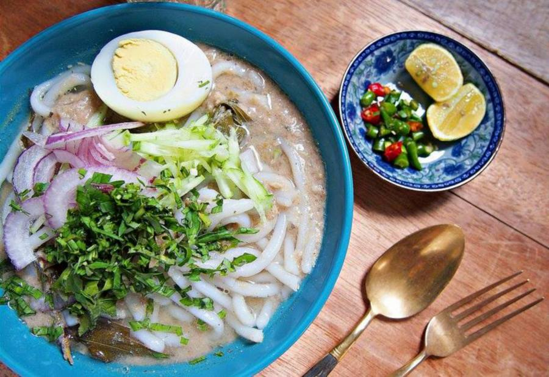
A popular dish in Kedah, laksa Kedah features rice noodles in a tangy fish-based gravy. It is typically garnished with cucumber, onions, and aromatic herbs.
Mee Udang Tsunami
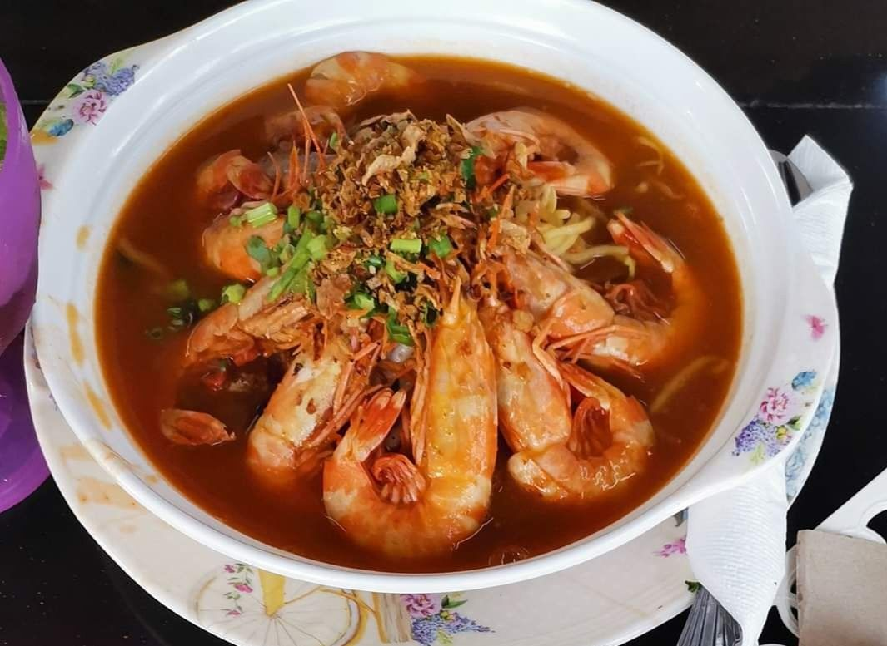
Known for its thick and sweet gravy, Mee Udang Tsunami is a beloved noodle dish in Kedah, generously loaded with fresh prawns.
Nasi Lemak Royale
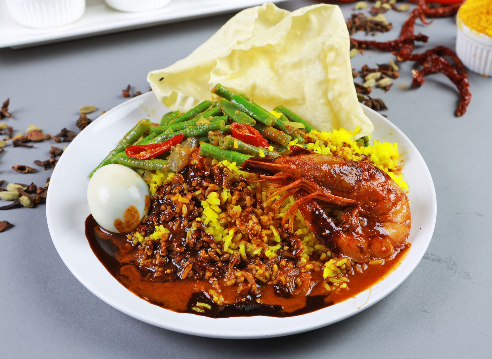
A unique Kedah twist on nasi lemak, this dish is served nasi kandar style with a mixed gravy of various curries, departing from the traditional presentation.
Nasi Ulam
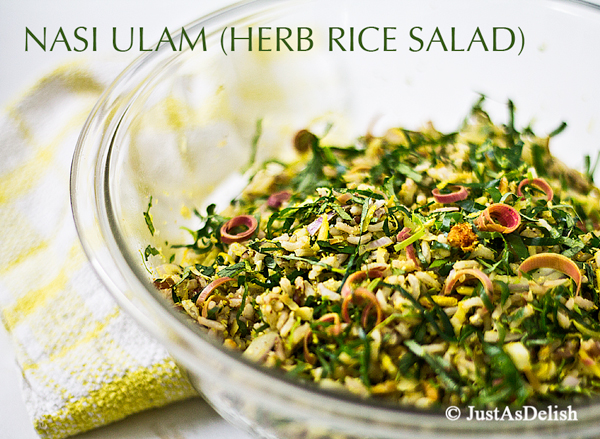
Nasi ulam is a traditional Kedah meal featuring rice mixed with shredded ulam (vegetables). Unlike nasi kerabu, it is white in color.
Satay Kedah
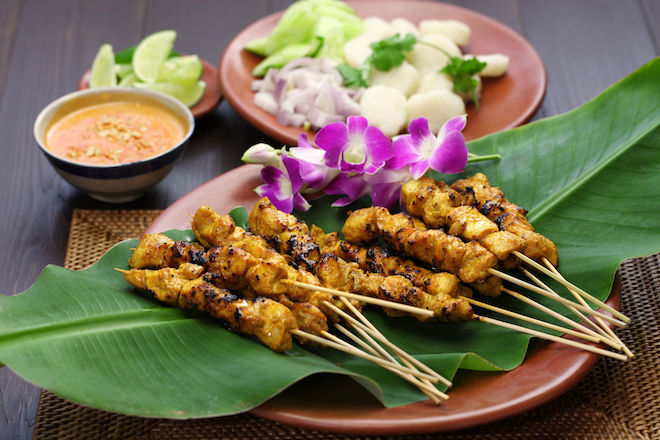
Kedah satay is renowned for its well-seasoned meat, grilled to perfection over charcoal. It offers a variety of meat options, including chicken, beef, lamb, and rabbit.
Perlis Food Story
Ikan Bakar
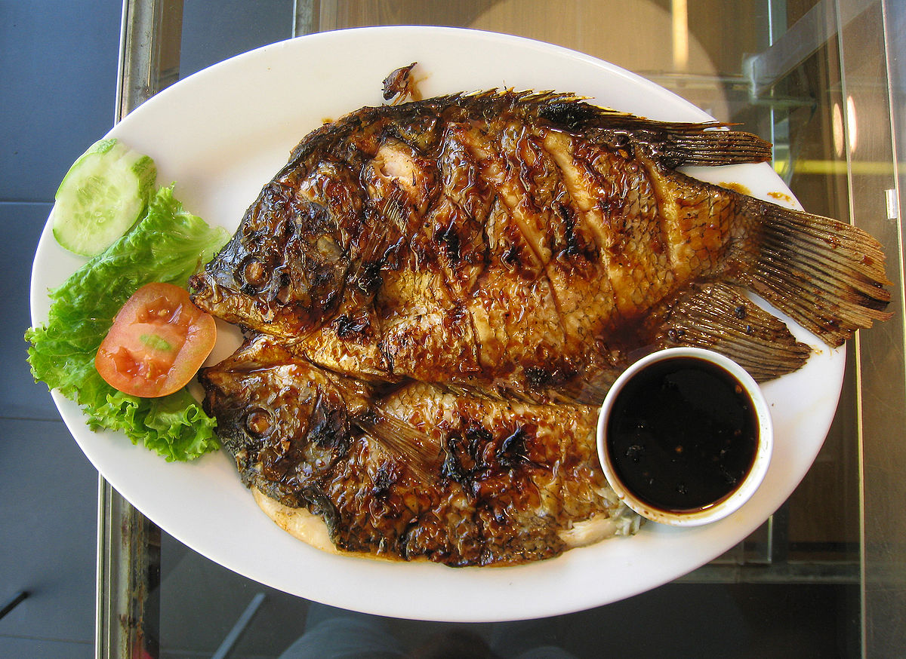
This popular dish features grilled fish marinated in a spicy sambal condiment and wrapped in banana leaves before being cooked over charcoal. It's a common sight at street vendors and uses various types of fish like tilapia, snapper, or stingray.
Kuih Karas
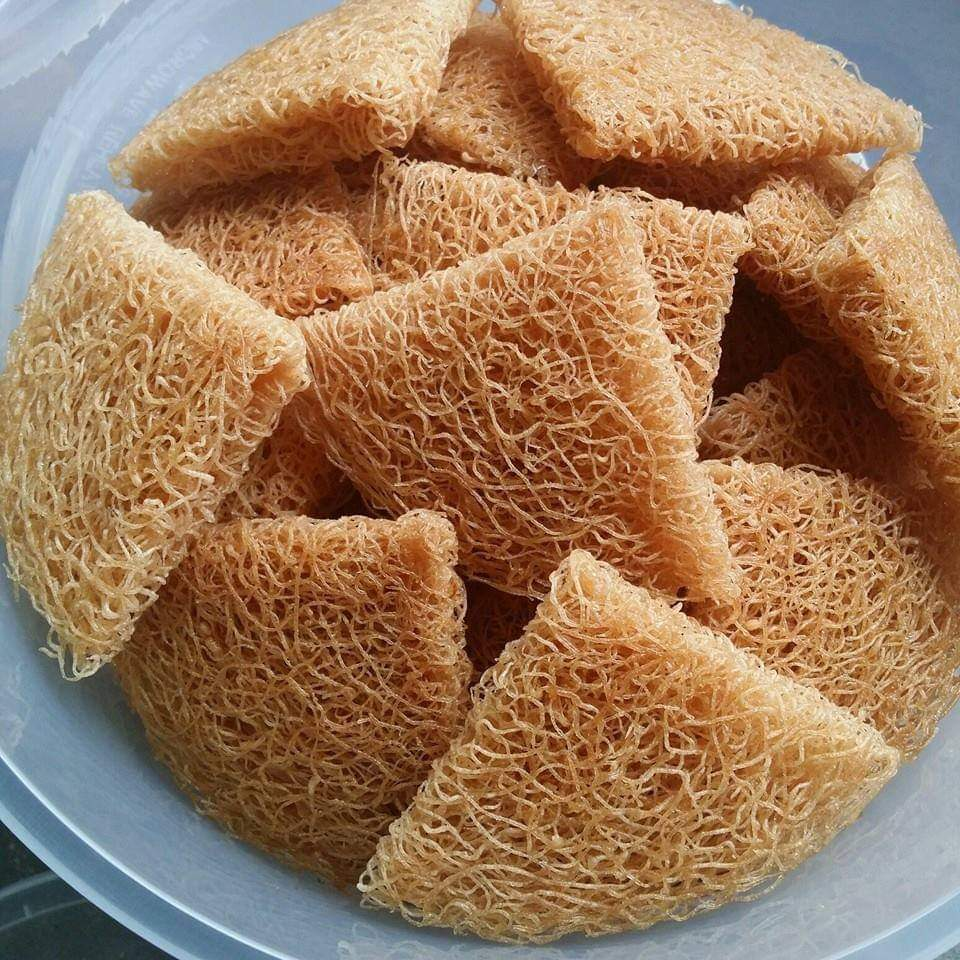
Kuih Karas is a traditional crispy and sweet snack made from rice flour. It has a network-like texture and comes in various shapes like rolls, triangles, and semicircles. This treat is perfect for enjoying with coffee or tea in the afternoon and is a popular choice for festive occasions.
Nasi Kandar Perlis

While Nasi Kandar originates from Penang, Perlis offers its own version. This dish combines steamed rice with a selection of curries, side dishes, and gravies. Curries typically include various blends of vegetables, seafood, or meat, offering a flavorful and customizable meal.
Pulut Mempelam / Pulut Mangga Harum Manis
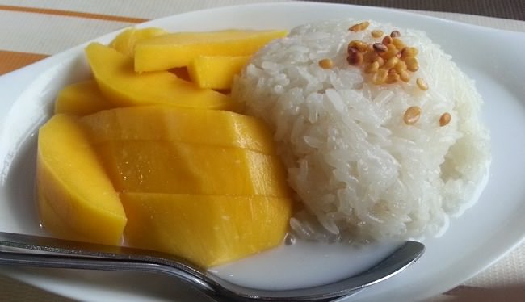
This famous Perlis dessert features sticky rice served with sweet coconut sauce and slices of Harumanis mango, known for its sweetness and aroma. The combination of textures and flavors makes Pulut Mempelam a delightful way to end a meal.
Roti Peknga
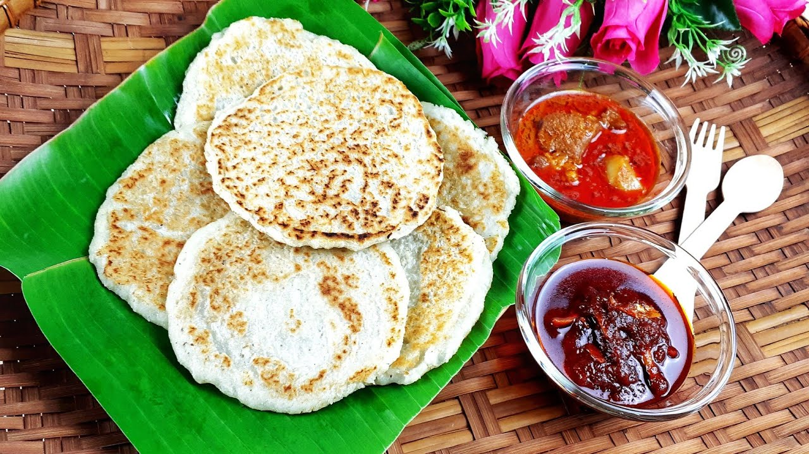
Roti Peknga, also known as lempeng kelapa, is a traditional pancake enjoyed in Perlis. Made with mashed bananas, flour, and coconut, this pancake can be eaten with fish gulai, coconut sticky rice, or dried fish. It's a popular breakfast option.
Sabah Food Story
Braised Fresh Fish Slice

Braised Fresh Fish Slice is a classic Chinese dish often prepared for special occasions like Chinese New Year. It's characterized by its delicate fish fillets cooked in a rich, savory sauce.
Kon Lou Mee

Kon Lou Mee is a popular Malaysian hawker dish featuring stir-fried noodles tossed in a flavorful sauce. It's typically served with barbecue pork (char siu) and wontons, although variations with minced meat, chicken, or vegetarian options exist.
Ngiu Chap

Ngiu Chap is a Cantonese-style beef noodle soup that has gained popularity in Malaysia. It's known for its rich and flavorful broth made from simmering beef bones and meat, often accompanied by beef tendons and meatballs.
Yee Fung Laksa
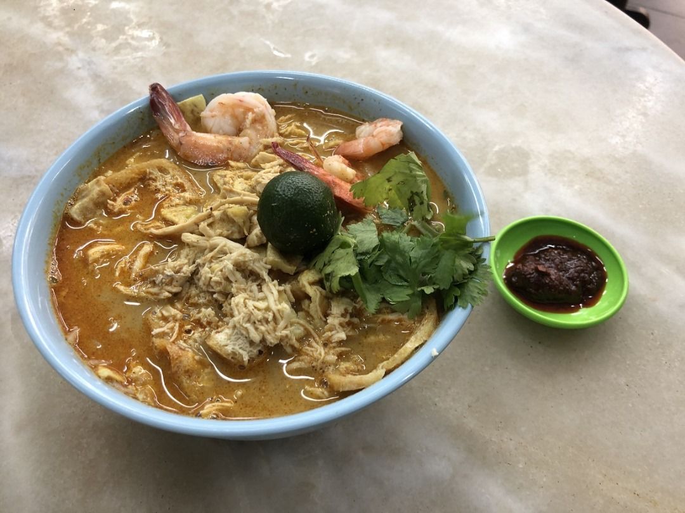
Yee Fung Laksa is a unique take on the traditional laksa, originating from Sabah, Malaysia. It's distinguished by its mild spiciness and the use of high-quality ingredients, resulting in a refined and flavorful broth.
Salted Egg Yolk Crab

Salted Egg Yolk Crab is a Singaporean dish that has gained immense popularity for its rich and indulgent flavor. It features deep-fried crab coated in a creamy salted egg yolk sauce, creating a luxurious and satisfying taste experience.
Back to Map
Melaka Food Story
Creek Burger

A hamburger, or simply a burger, is a dish consisting of fillings—usually a patty of ground meat, typically beef—placed inside a sliced bun or bread roll. The patties are often served with cheese, lettuce, tomato, onion, pickles, bacon or chilis with condiments such as ketchup, mustard, mayonnaise, relish or a "special sauce", often a variation of Thousand Island dressing and are frequently placed on sesame seed buns.
Signature 3 Lapis Coffee

Typically, when roasters and coffee shops create blends, they will offer a house or “signature” blend. “A signature blend is a uniquely crafted coffee blend made with single origin beans,” Christos explains. “Signature blends are created by individual coffee shops using their unique recipe.” From here we can see that the Unique part of Signature 3 lapis coffee.
Rojak Buah

Rojak buah is a fruit salad which can be found in Indonesia, Malaysia and Singapore. Penang, in Malaysia for example is popular for this salad. The word ‘rojak’ means mixture in colloquial Malay while ‘buah’ translates into fruits. The special shrimp paste used in this fruit salad is the star ingredient. Mixing the crunchy fruits and vegetables in the sauce gives fresh flavours an interesting savoury twist to it. Most importantly, it complements well with the crunchy peanuts and sesame seeds that are added.
Japanese Chicken Katsu Curry

A crispy, crumbed chicken cutlet served with a lightly spiced, sweet curry sauce – guys, my homemade version of a Japanese katsu is so good! This recipe is super easy, and the great thing is if you’re a heat-lover, you can tweak things by adding chilli flakes at the end.
>
Cheesy Prawn Meehun

Cheesy Prawn meehun is inspired by Hong Kong’s Lobster Cheese Noodles. Chef Lee uses huge prawns instead of lobster as the main ingredient. The cheese melts nicely into the slightly watery gravy and the mix has just the right amount of creaminess. It isn’t too thick, so you won’t find the taste overwhelming after a few mouthfuls. The freshness and sweetness of the prawns are distinct. There’s even prawn roe scattered around the dish. True enough, Restoran Tong Sheng’s Cheesy Prawn Meehun is so well executed that we have zero complaints.
Back to Map
Sarawak Food Story
Kolo Mee

Famously known as one of Sarawak’s signature dishes, 'Kolo Mee' is a simple yet flavourful noodle dish typically served for breakfast. Topped with minced meat, slices of succulent barbequed pork, slivers of spring onions and fried onions, this Chinese dish is so popular that a Halal version has since been created. Halal 'Kolo Mee' is usually served with slices of beef or chicken, fragrant fried shallots, spring onions and comes with a bowl of rich beef or chicken soup.
Rojak
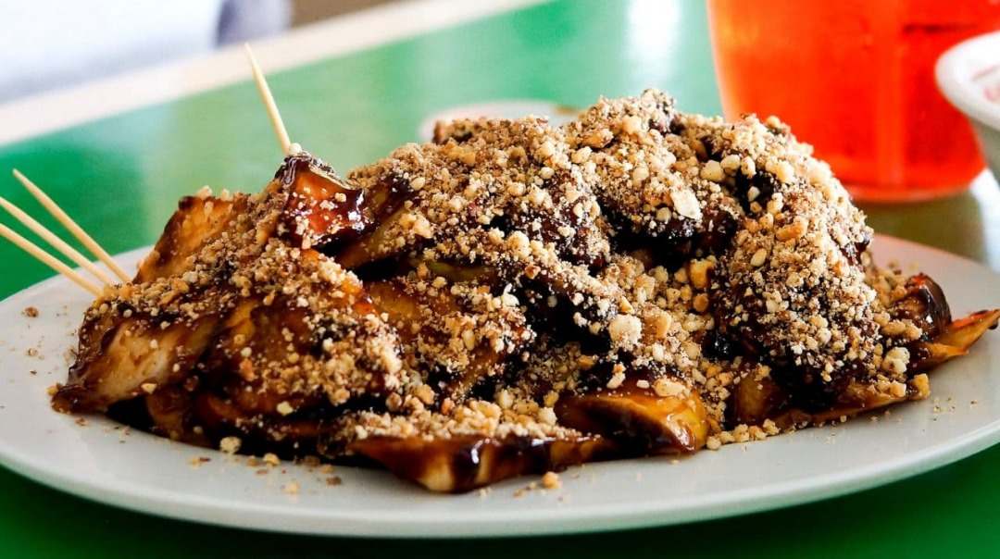
Rojak or we call it rujak in Indonesia is popular street food. Indonesian rujak is usually made with mainly fresh fruits (rujak buah) with rujak sauce pretty similar to Chinese-style rojak that is popular in Singapore and Malaysia. Rojak/rujak also has a secondary meaning of “mixture of different things”. This is often used in an everyday conversation, similar to gado gado, which also has similar secondary meaning with rojak/rujak.
Tomato Kueh Tiaw

The “Tomato Kuay Teow” is a very common hawker styled food sold in almost every “kopitiam” aka coffee shops in town. Do not be fooled by the term “coffee shop” it is the term we use to describe local styled “simple” restaurants where you get freshly cooked food at the cheapest prices. Tomato Kuay Teow is a very common late-night supper
Kueh Chap
“Kuay chap” literally means “cake gravy”. The “cake” refers to the thin slices of rice cakes that are cooked in hot boiling water. The cake slices are scooped out and placed in a bowl, and doused with a generous ladle of gravy for the meat stew, topped with whatever that is used in the stew, then garnished with fried shallots and coriander leaves. As a street food, kuay chap was a lunch food served by the roadside of Chaozhou in Guangdong province. Because of the Teochew diaspora, kuay chap has travelled all over Southeast Asia, and has transformed into various varieties in Thailand, Malaysia and Singapore. In Thailand, internal organs like liver are added and chili flakes are added prior to the serving. In Singapore, the meat is not served in the bowl of cake but on a separate plate.
Fishball Mee

Fishball mee, a delicious, piping hot bowl of fishball noodles is never far away — this popular dish can be commonly found in our hawker centres, food courts, and coffee shops in Singapore, with long, snaking queues at the most famous outlets. The noodles are cooked al-dente to give it a chewy texture, and are then usually tossed in small amounts of oil, soy sauce, chilli paste, and black vinegar, and served with fishballs, sliced fish cake, lettuce, bean sprouts, and with some vendors, fish dumplings.
Back to Map
Johor Food Story
Kueh Tiao (Stir-Fried Rice Noodles)

Kueh Tiao is a stir-fried rice noodle dish from Maritime Southeast Asia of southern Chinese origin. In Hokkien and Teochew, char means 'stir-fried' and kway teow refers to flat rice noodles. It is made from flat rice noodles or kway teow.
Ais Jagung Special

Ais kacang was originally made of only shaved ice and red beans, though the number and diversity of ingredients has since expanded. Today, ais kacang generally comes in bright colors and with various fruit cocktails and dressings. In Malaysia, Ais Kacang comes in many variations, one of it is this ais Jagung Special, this is Special locally in Johor which its made with jagung and Ais.
Chicken Chop

This Malaysian style fried Chicken Chop is juicy and perfectly crispy. The chicken is smothered in mushroom or black pepper sauce. Served with fresh coleslaw and crinkle fries.
Curry Fish Head

Fish head curry is a soupy dish made by braising a fish head in a coconut milk soup base, flavoured with an aromatic curry spice paste, tamarind juices and seasonings. This really is a wholesome meal in and of itself, as fresh cut vegetables like egg plant, lady fingers and tomatoes, are added and stewed with the fish head in the curry. This dish is all about bold and distinctive flavours – it’s harmoniously sourish, salty, spicy, and savoury. It’s so delicious that we usually lap everything up, ladle after ladle of curry sauce with tender fish chunks and vegetables.
Fried Pepper Crab

Crab pepper fry is a South Indian (Tamil Nadu) seafood delicacy, infused with fennel seeds powder and black pepper powder, which makes this crab dish mouth-watering and packed with flavours. You can guess from the name itself, Crab pepper fry (Nandu milagu varuval), that it is peppery and hot. Crab pepper fry is not completely dry but is semi dry with thick gravy coated on the crab.
Back to Map